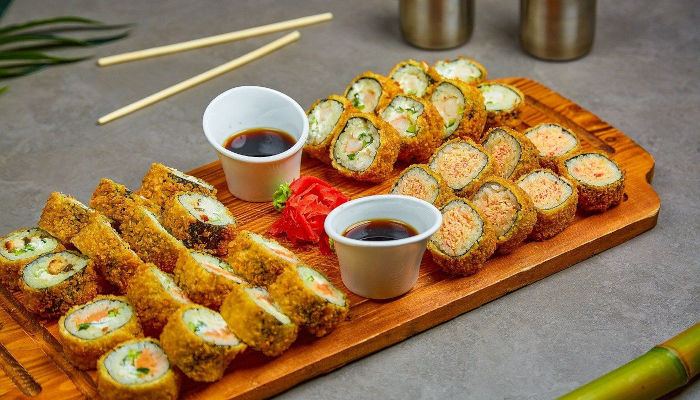

Gastronomía
Japonesa
La gastronomía japonesa es un fascinante viaje a través de sabores delicados, presentación meticulosa y una profunda conexión con la naturaleza. Con una historia que se remonta siglos atrás, la comida tradicional japonesa ha evolucionado en una forma de arte culinario que refleja los valores y la estética de la cultura japonesa. En este artículo, exploraremos algunos de los platos más emblemáticos de la gastronomía tradicional de Japón, descubriendo los secretos detrás de su preparación, su significado y cómo representan la esencia misma de Japón.
Sushila perfección de la simplicidad
El sushi es uno de los platos japoneses más conocidos en todo el mundo. Esta exquisitez culinaria es un ejemplo perfecto de la filosofía japonesa de simplicidad y atención al detalle. El sushi tradicional se compone de arroz sazonado con vinagre y pescado fresco crudo, aunque también existen variantes con ingredientes cocidos o vegetales. Cada pieza de sushi se prepara con precisión y se presenta de manera elegante. El sabor sutil del pescado y el arroz se complementan para crear una experiencia gustativa única.
Tempuracrujiente y ligero
La tempura es un plato que muestra la influencia de la cocina frita introducida por los portugueses en el siglo XVI. Sin embargo, los japoneses han llevado este concepto a un nivel superior. Los mariscos, verduras y otros ingredientes se sumergen en una masa ligera y crujiente antes de freírse. La técnica precisa para lograr una textura perfectamente crujiente mientras se mantiene la frescura de los ingredientes es crucial en la preparación de este plato.
Ramenun abrazo reconfortante
Aunque muchas personas asocian el ramen con los fideos instantáneos, el ramen tradicional es un plato de caldo de fideos que ha sido perfeccionado a lo largo de los años. La base de caldo puede variar, desde miso hasta shoyu (soya) y tonkotsu (hueso de cerdo). Los fideos son preparados al dente y se acompañan de ingredientes como huevo cocido, trozos de cerdo, cebolla verde y alga nori. El ramen es un plato que reconforta el alma y calienta el cuerpo, siendo especialmente popular en los meses fríos.
Teppanyaki el arte de la parrilla

Teppanyaki es una experiencia gastronómica interactiva que involucra la parrilla plana. Los ingredientes frescos, como carne, mariscos y vegetales, son cocinados en la parrilla frente a los comensales por un hábil chef. La presentación y el entretenimiento se combinan con la preparación de platos deliciosos. Los chefs de teppanyaki dominan la destreza necesaria para cocinar cada ingrediente a la perfección mientras interactúan con la audiencia.
Wagashidulces que son obras de arte

Wagashi son los dulces tradicionales japoneses que no solo son deliciosos, sino también hermosos en su presentación. Estos dulces a menudo se sirven junto con el té matcha en la ceremonia del té japonesa. Los wagashi pueden estar hechos de pasta de judía roja o blanca (anko), arroz glutinoso, gelatina y otros ingredientes naturales. Su apariencia a menudo refleja elementos de la naturaleza, como flores, hojas y estaciones, y su dulzura es más sutil en comparación con los dulces occidentales.
Conclusión
La gastronomía tradicional de Japón va mucho más allá de la simple comida; es una expresión de la identidad cultural, la conexión con la naturaleza y la búsqueda de la perfección en cada detalle. Desde el refinado arte de Kaiseki Ryori hasta la informalidad de los izakayas y la belleza de los wagashi, cada aspecto de la gastronomía japonesa tiene un propósito y un significado. Al sumergirse en esta rica tradición culinaria, los comensales tienen la oportunidad de explorar la esencia misma de Japón y apreciar la belleza en la simplicidad y el equilibrio.